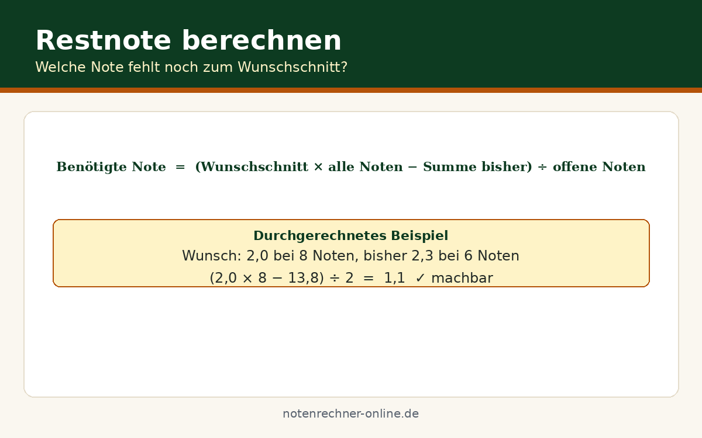

Notendurchschnitt planen: Welche Note noch gebraucht wird
Ein Ziel vor Augen: ein Schnitt von 2,0 für die Bewerbung oder die Versetzung ohne Nachprüfung. Die Frage lautet dann: Welche Note muss in den verbleibenden Prüfungen noch erreicht werden? Wir von Notenrechner Online zeigen, wie wir die Durchschnittsformel umstellen und den Weg zum Wunschschnitt planen – mit durchgerechnetem Beispiel und den typischen Stolperfallen.
Die Formel rückwärts: Vom Ziel zur Restnote
Normalerweise rechnen wir vorwärts: alle Noten addieren, durch die Anzahl teilen. Für die Planung drehen wir die Rechnung um: Wir multiplizieren den Zielschnitt mit der Gesamtzahl aller Noten – bisherige plus ausstehende – und ziehen davon die Summe der bisherigen Noten ab. Der Rest wird durch die Anzahl der ausstehenden Prüfungen geteilt. Wer die durchschnittliche Note berechnen und planen will, für den hilft unser Rechner auf https://notenrechner-online.de/.
Fehlende Summe = Benötigte Summe − Summe der bisherigen Noten
Restnote = Fehlende Summe ÷ Anzahl der restlichen Prüfungen
Durchgerechnetes Beispiel mit echten Zahlen
Schritt 1 – Bisherige Summe: 8 × 2,6 = 20,8
Schritt 2 – Benötigte Summe: Insgesamt 10 Noten × Ziel 2,4 = 24,0
Schritt 3 – Fehlende Summe: 24,0 − 20,8 = 3,2
Schritt 4 – Restnote: 3,2 ÷ 2 = 1,6
In den beiden verbleibenden Prüfungen wird im Schnitt eine 1,6 gebraucht – zum Beispiel eine 1 und eine 2. Anspruchsvoll, aber machbar. Die Rechnung zeigt ehrlich den aktuellen Stand: Lieber jetzt gezielt lernen, als sich kurz vor dem Zeugnis zu wundern.
Stolperfalle: Das unmögliche Ziel
Achtung: Nicht jedes Ziel ist erreichbar. Nehmen wir dasselbe Beispiel, aber mit Ziel 2,0: Die benötigte Summe wäre 10 × 2,0 = 20,0 – doch mit 20,8 sind bereits mehr Punkte angehäuft, als das Ziel erlaubt. Selbst mit zwei Einsen wären es nur (20,8 + 2) ÷ 10 = 2,28. Ebenso unmöglich: eine Restnote besser als 1,0, denn 1,0 ist in Deutschland die bestmögliche Note. In diesem Fall das Ziel anpassen oder zusätzliche Leistungen einplanen, die den Schnitt noch drehen können.
Kostenlose Spickzettel & Tabellen zum Download
Wir haben die wichtigsten Formeln und Tabellen für dich als kostenlose PDFs aufbereitet – ausdrucken, ins Heft kleben, fertig. Alle Downloads sind gratis und ohne Anmeldung.

Häufige Fragen zur Restnote
Was tun, wenn mein Ziel rechnerisch unmöglich ist?
Das Ziel an einen erreichbaren Wert anpassen – in unserem Beispiel ist 2,3 statt 2,0 oft schon realistisch. Alternativ hilft ein Gespräch mit der Lehrkraft über zusätzliche Leistungen wie Referate, die weitere Noten ins Spiel bringen.
Zählen alle verbleibenden Prüfungen gleich viel?
Nicht unbedingt. Wenn eine Prüfung doppelt gewichtet ist, zählt sie wie zwei einzelne Prüfungen. Dann mit der gewichteten Formel weiterrechnen, damit die Restnote stimmt.
Wie genau muss ich bei der Planung rechnen?
Eine Nachkommastelle reicht völlig – zum Beispiel Restnote 1,6. Lieber etwas pessimistisch rechnen und einen kleinen Puffer einplanen.
Funktioniert die Methode auch für die Oberstufe?
Ja, das Prinzip ist identisch – nur werden dort Punkte von 0 bis 15 statt Noten von 1 bis 6 verwendet. Auch dafür gibt es bei uns den passenden Rechner.
Restnote jetzt planen
Bisherige Noten und Ziel eingeben – unser kostenloser Rechner zeigt sofort, welche Note in den restlichen Prüfungen noch gebraucht wird.